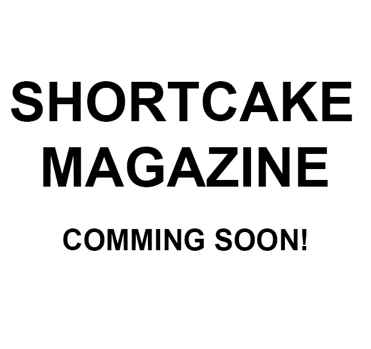
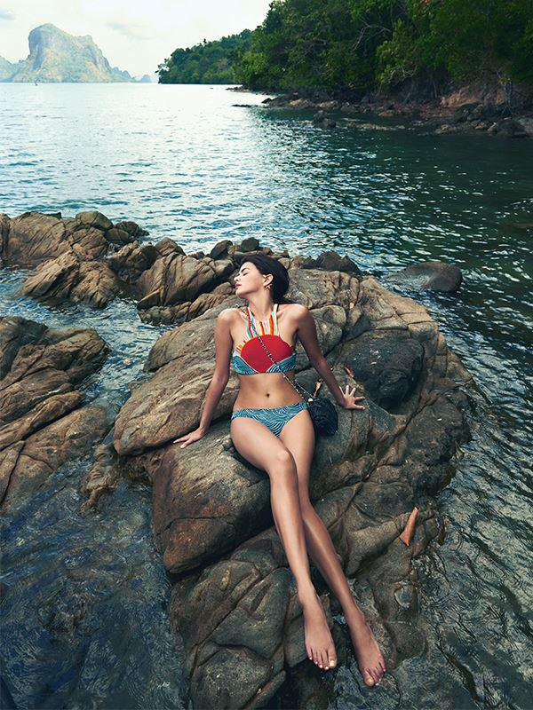

SHORTCAKE magazine is a print and online publication that consists of travel
destinations, world fashion, photo guides, and citry maps. SHORTCAKE's main goal is to transform
the lives of our readers with an essential aspect of conviency through the everyday experience.
Their is an endless need of presenting news in a suitable manner that we provide to our readers.
Our team has created the idea of SHORTCAKE mag to mesh fashion and style within the relm of travel.
SHORTCAKE adds new stories weekly, in addition to our online site we have created a monthly print
publication in which each issue covers various countries extensively.

